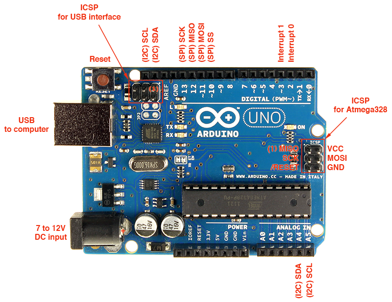

Apa itu Arduino Uno?
Arduino Uno adalah papan mikrokontroler berbasis ATmega328P yang digunakan untuk membuat berbagai proyek elektronik interaktif. Dengan Arduino, kamu bisa mengontrol LED, motor, sensor, dan banyak lagi menggunakan kode sederhana.
Langkah Pertama: Menyiapkan Arduino
- Unduh dan instal Arduino IDE.
- Hubungkan Arduino ke komputer menggunakan kabel USB.
- Atur jenis board dan port serial di menu Tools pada IDE.
Program Pertama: Blink LED
Program "Blink" menyalakan dan mematikan LED pada pin 13 secara bergantian setiap detik. Ini adalah cara yang baik untuk memastikan bahwa board Arduino dan IDE telah terhubung dengan benar.
void setup() {
pinMode(13, OUTPUT);
}
void loop() {
digitalWrite(13, HIGH);
delay(1000);
digitalWrite(13, LOW);
delay(1000);
}
Setelah menulis kode di atas, klik tombol Upload di IDE. Jika berhasil, LED pada board Arduino akan mulai berkedip.